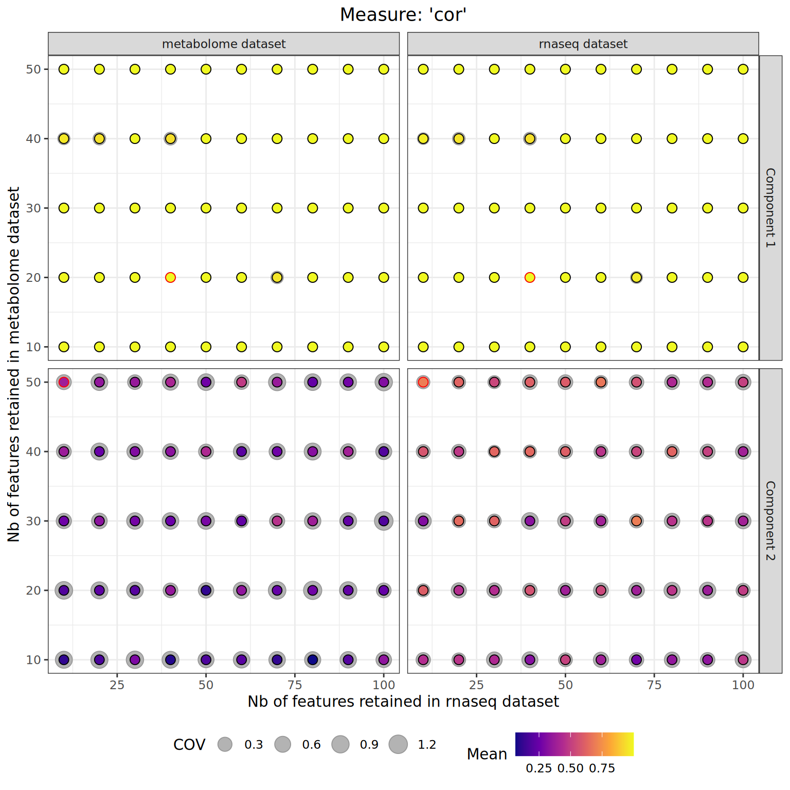
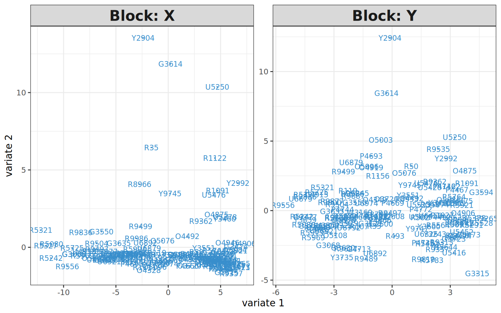
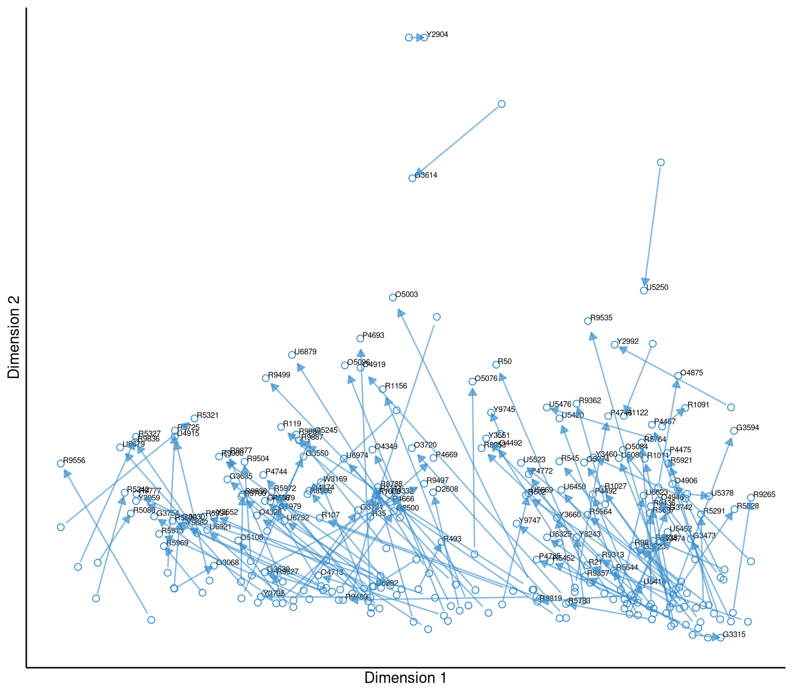
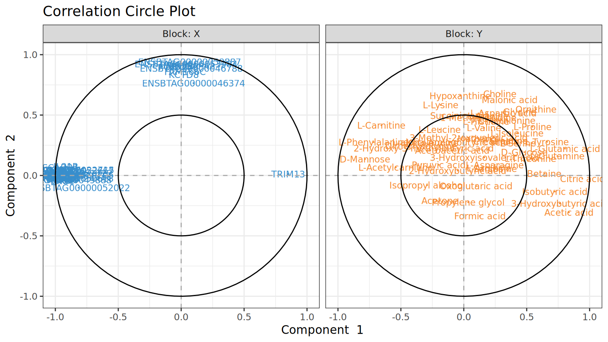

7 Integration with sPLS
Now that the omics datasets have been appropriately pre-processed and pre-filtered, we are ready to perform the actual data integration step. In this chapter, we will show how to perform multi-omics data integration with the sPLS method from the mixOmics package.
As a reminder, here is what the _targets.R script should look like so far:
_targets.R script
7.1 What is sPLS?
sPLS (for sparse Partial Least Squares) is a method for the unsupervised integration of two omics datasets. Given two omics datasets for which measurements are taken on the same samples, sPLS aims at investigating the shared variation between the datasets, and the selection of correlated features driving this shared variation.
sPLS works by constructing linear combinations of the omics features, called latent components. These latent components are constructed such that the covariance between each omics dataset’ component is maximised. They are constructed iteratively, and different matrix deflation modes can be used after the construction of each component. The selected mode defines the role that the two datasets play in the analysis, i.e. whether there is a predictor and a response dataset, or whether the two datasets play symmetrical roles. In addition, \(L1\)-regularisation (also called LASSO) is applied to the latent components in order to select the most important features from each dataset. Note that within the mixOmics package, the (s)PLS algorithm has two types: the univariate type denoted PLS1, which refers to the case where one of the datasets contains a single feature or variable, and the multivariate type, PLS2, which is for the integration of two datasets each with multiple features. This chapter is focused on the PLS2 type.
sPLS requires as input matrices of omics measurements obtained on the same samples. While the omics datasets are automatically centred and scaled by the algorithm, proper preprocessing and normalisation is assumed to be carried out by the user. Although the sPLS algorithm can handle the presence of missing features, it will prohibit the use of cross-validation, so it is recommended to perform data imputation prior to running an sPLS analysis.
7.2 Creating the sPLS input
The first step is to transform the MultiDataSet object into a suitable format for the mixOmics package. This can be done through the get_input_spls() function. The function restricts the datasets to only common samples, and returns a named list, where each element is an omics dataset matrix with samples as rows and features as columns. The names of the two datasets to analyse are passed on through the datasets argument. In addition, the analysis mode must be specified through the mode argument, and optionally the multilevel option to handle repeated measurements can be set through the multilevel argument. Both concepts are explained below.
7.2.1 The four sPLS modes
There are four possible modes that can be used for an sPLS analysis. These modes define the role that each of the datasets play, and differ by the type of matrix deflation used in the analysis. These four modes are:
The regression mode (
mode = "regression"): the first dataset (first name indatasetsargument) is considered as the ‘predictor’ dataset, and the second as the ‘response’ dataset. With this mode, the order in which the datasets appear in thedatasetsargument matters.The canonical mode (
mode = "canonical"): the two datasets play a symmetrical role, and the order in which they appear in thedatasetsargument does not matter. This mode is used when there is no a priori relationship between the two datasets. This is similar to a canonical correlation analysis (CCA).The invariant mode (
mode = "invariant"): similar to the regression mode with the first dataset being considered as the predictor dataset, and the second as the response dataset. However no matrix deflation is performed, which allows to perform a redundancy analysis. Again, the order in which the datasets appear in thedatasetsargument matters.The classic mode (
mode = "classic"): similar to the regression mode with the first dataset being considered as the predictor dataset, and the second as the response dataset; however this mode uses a different normalisation method for the loading vectors in accordance to another version of the sPLS method. Again, the order in which the datasets appear in thedatasetsargument matters.
The difference between these four modes lies in the type of matrix deflation used after computing each latent component. Therefore, the first latent components constructed will be identical between modes, but the subsequent ones will differ.
7.2.2 The multilevel option
The mixOmics package includes an option to deal with repeated measurements (see the mixOmics multilevel article). This corresponds to the case where several samples in the omics datasets come from the same biological individual (patient, animal, plant) that has been measured several times (e.g. before and after a treatment, or across several body sites). In such case, it is possible that the measurements obtained are more similar within an individual than within a treatment group, which reduces our ability to detect differences between the treatment groups.
To mitigate this effect, the mixOmics package can decompose the datasets to extract their within-individual variation part, which is then used as input for the sPLS run (Liquet et al. (2012) ). As noted by the authors of the package, this methodology is applicable to balanced as well as unbalanced designs. Before selecting this option, is it recommended to explore the datasets with some unsupervised dimension reduction method (e.g. a PCA), in order to assess whether the between-individual variation should be removed to enable the detection of any between-treatment effect.
The multilevel option can accommodate one- or two-factor decomposition, which refers to the number of treatment covariates whose effect we are studying. For example, if we have repeated measurements on the same subjects for three time-points after the application of a treatment, we will use a one-factor decomposition with time being the factor of interest. If instead we have repeated measurements on the same subjects for three time-points after the application of two different treatments (so 6 measurements for a same subject), we will use a two-factor decomposition with time and treatment as the factors of interest.
With the get_input_spls() function, in order to use the multilevel option with one factor, the multilevel argument should be populated with the name of the column in the samples metadata of the omics datasets containing the ID of the biological individuals. For example, if we have measured different plants once after the application of two different treatments, the samples metadata table might look like this:
| id | plant_id | treatment | |
|---|---|---|---|
| sample_1 | sample_1 | plant_1 | A |
| sample_2 | sample_2 | plant_1 | B |
| sample_3 | sample_3 | plant_2 | A |
| sample_4 | sample_4 | plant_2 | B |
| sample_5 | sample_5 | plant_3 | A |
| sample_6 | sample_6 | plant_3 | B |
| sample_7 | sample_7 | plant_4 | A |
| sample_8 | sample_8 | plant_4 | B |
| sample_9 | sample_9 | plant_5 | A |
| sample_10 | sample_10 | plant_5 | B |
where the id column contains the unique ID for each observation (these are the IDs present in the omics datasets), plant_id records the ID of the plant measured (our biological individuals) on which repeated measurements have been taken, and treatment contains the treatment that has been applied before each observation. In that case, we will set multilevel = "plant_id" to use the multilevel option:
spls_input_multilevel1 <- get_input_spls(
mo_set_multilevel1,
mode = "canonical",
datasets = c("rnaseq", "metabolome"),
multilevel = "plant_id"
)The resulting design table that will be used by the mixOmics package is stored in the multilevel argument of the object returned by the get_input_spls() function. It consists of a data-frame with observations as rows, and an integer ID for the corresponding biological individual in the first column:
attr(spls_input_multilevel1, "multilevel")#> plant_id
#> sample_1 1
#> sample_2 1
#> sample_3 2
#> sample_4 2
#> sample_5 3
#> sample_6 3
#> sample_7 4
#> sample_8 4
#> sample_9 5
#> sample_10 5In order to use the multilevel option with two factors, the multilevel argument should instead be populated with a vector of three column names from the samples metadata table. The first value, similarly to a one-factor decomposition, should be the name of the column containing the ID of the biological individuals. The second and third values should be the name of the columns containing the levels of the two factors of interest. Continuing on the previous example, supposing that in a similar study, we take measurements on the plants at three different time-points after the application of each treatment. The samples metadata table might look like this:
| id | plant_id | treatment | time | |
|---|---|---|---|---|
| sample_1 | sample_1 | plant_1 | A | 1 |
| sample_2 | sample_2 | plant_1 | A | 2 |
| sample_3 | sample_3 | plant_1 | A | 3 |
| sample_4 | sample_4 | plant_1 | B | 1 |
| sample_5 | sample_5 | plant_1 | B | 2 |
| sample_6 | sample_6 | plant_1 | B | 3 |
| sample_7 | sample_7 | plant_2 | A | 1 |
| sample_8 | sample_8 | plant_2 | A | 2 |
| sample_9 | sample_9 | plant_2 | A | 3 |
| sample_10 | sample_10 | plant_2 | B | 1 |
| sample_11 | sample_11 | plant_2 | B | 2 |
| sample_12 | sample_12 | plant_2 | B | 3 |
with similar columns to the previous example, and an additional time column indicating the time-point at which the measurement was taken. In that case, we should set multilevel = c("plant_id", "treatment", "time") to use the multilevel option, as follows:
spls_input_multilevel2 <- get_input_spls(
mo_set_multilevel2,
mode = "canonical",
datasets = c("rnaseq", "metabolome"),
multilevel = c("plant_id", "treatment", "time")
)As for the one-factor example, the resulting design table that will be used by the mixOmics package is stored in the multilevel argument of the object returned by the get_input_spls() function. It consists of a data-frame with observations as rows, and an integer ID for the corresponding biological individual in the first column, and the two factors with their original levels in the following columns:
attr(spls_input_multilevel2, "multilevel")#> plant_id treatment time
#> sample_1 1 A 1
#> sample_2 1 A 2
#> sample_3 1 A 3
#> sample_4 1 B 1
#> sample_5 1 B 2
#> sample_6 1 B 3
#> sample_7 2 A 1
#> sample_8 2 A 2
#> sample_9 2 A 3
#> sample_10 2 B 1
#> sample_11 2 B 2
#> sample_12 2 B 37.2.3 The sPLS input object
For our example dataset, we will integrate the transcriptomics and metabolomics datasets using the canonical mode (since we don’t have any a priori on the relationship between the two datasets). In this case we do not have a repeated measurements design.
tar_target(
spls_input,
get_input_spls(
mo_presel_supervised,
mode = "canonical",
datasets = c("rnaseq", "metabolome")
)
)The result of the function is a named list of length 2, where each element is a matrix of omics measurements, which have been restricted to samples that are common to the two datasets. The sPLS mode to be used is stored in the mode attribute of the object.
tar_read(spls_input) |> str()
#> List of 2
#> $ rnaseq : num [1:139, 1:994] 3.49 3.49 4.01 3.49 4.25 ...
#> ..- attr(*, "dimnames")=List of 2
#> .. ..$ : chr [1:139] "R9497" "R5969" "R5327" "R5979" ...
#> .. ..$ : chr [1:994] "ENSBTAG00000000020" "ENSBTAG00000000046" "ENSBTAG00000000056" "ENSBTAG00000000061" ...
#> ..- attr(*, "datatype")= chr "ExpressionSet"
#> .. ..- attr(*, "package")= chr "Biobase"
#> $ metabolome: num [1:139, 1:55] 3.4 3.32 3.72 3.33 3.6 ...
#> ..- attr(*, "dimnames")=List of 2
#> .. ..$ : chr [1:139] "R9497" "R5969" "R5327" "R5979" ...
#> .. ..$ : chr [1:55] "HMDB00001" "HMDB00008" "HMDB00042" "HMDB00043" ...
#> ..- attr(*, "datatype")= chr "MetabolomeSet"
#> .. ..- attr(*, "package")= chr "moiraine"
#> - attr(*, "mode")= chr "canonical"7.3 Choosing the number of latent components
The first step when running an sPLS analysis is to determine the number of latent components to construct, which can be chosen using cross-validation. This is done by running an initial sPLS analysis on the datasets with no feature selection and a large number of latent components; for example we want to test up to four latent components. We use for this the spls_run() function, which is a wrapper for the mixOmics::spls() function.
tar_target(
spls_novarsel,
spls_run(
spls_input,
ncomp = 4
)
)We then apply the mixOmics::perf() function on the result of this initial run. There are several parameters to set:
validation: the type of cross-validation to perform, M-fold ("Mfold") or leave-one-out ("loo"). We recommend to use M-fold validation, except when the number of samples is very small.folds: for M-fold cross-validation, the number of folds to construct, i.e. the number of groups in which to split the samples. Each group in turn will be considered as test set while the remaining groups are used to make the training set. The value to use depends on the number of samples in the datasets. By default, 10 is a reasonable number. For leave-one-out cross-validation, this parameter is set to the number of samples (that is the principle of leave-one-out cross-validation).nrepeat: the number of times the cross-validation will be repeated. This is important for M-fold cross-validation, as the way the samples are split into groups affects the results. Therefore, by repeating the cross-validation scheme we are averaging the results over different splits, thus reducing the impact of samples splitting. We recommend at least 10 repeats. Irrelevant for leave-one-out cross-validation, so can be left to 1.cpus: number of CPUs to use for the computation. Useful iffolds\(\times\)repeatsis large, as this can be computationally intensive.
Here we’ll perform a 10-fold cross validation with 10 repeats.
tar_target(
spls_perf_res,
mixOmics::perf(
spls_novarsel,
validation = "Mfold",
folds = 10,
nrepeat = 10,
cpus = 3
)
)We can visualise the results of the cross-validation with the mixOmics::plot.tune.spls() function, setting the criterion to Q2.total, which corresponds to the \(Q^2\) criterion reflecting the predictive power of the model (other possible values include cor.tpred, cor.upred, RSS.tpred, RSS.upred):
The plot generated displays the average \(Q^2_{total}\) criterion across the different cross-validation folds obtained with different number of latent components. The authors of the mixOmics package recommend to select the number of latent components above which the Q2 criterion becomes smaller than 0.0975 (depicted as a black horizontal line in the plot). However, there are cases in which the Q2 values instead increases with the number of latent components. In these cases, it is recommended to select the number of latent components above which the Q2 values exceed the threshold of 0.0975. To facilitate the selection, the spls_get_optim_ncomp() function can automatically select the optimal number of latent components to use based on the cross-validation results. However, its results should always be checked against the graphical representation of the \(Q^2_{total}\) criterion. In our case, the function selects the optimal number of latent components to construct to be 1:
spls_get_optim_ncomp(tar_read(spls_perf_res))
#> [1] 1Note that with this function, it is possible to set a minimum number of latent components to construct. This is useful if we want to be able to generate sample plots, even though technically only one latent component is necessary. This minimum number can be set through the min_ncomp argument. For the example, we will set it to two, to be able to showcase some of the plotting functionalities. We will save the chosen value in a target, for reuse in the rest of the pipeline:
tar_target(
spls_optim_ncomp,
spls_get_optim_ncomp(spls_perf_res, min_ncomp = 2)
)tar_read(spls_optim_ncomp)
#> [1] 27.4 Choosing the number of features to retain
The next parameter to set is the number of features to retain from each of the omics datasets, for each latent component. Again, we can use cross-validation to select optimal values amongst a grid of values to test. The range of values to test depends on the type of question we are trying to answer: selecting a larger number of features might lead to a higher degree of agreement between the latent components of the two datasets, but will be hard to manually inspect for further characterisation.
The function spls_tune() provides a wrapper around the mixOmics::tune() function that performs this cross-validation. Some of the arguments are similar to the mixOmics::perf() function, e.g. validation, folds, nrepeats or cpus. In addition, we recommend setting the measure argument, which corresponds to the metric used for performance assessment, to "cor" (i.e. the correlation between the latent components constructed). Alternatively, it is possible to set the measure argument to "RSS".
The keepX and keepY arguments control the grid of values to be tested as possible number of features to retain from the first and second dataset, respectively. Both arguments should be in the form of an integer vector of values to test. If no value is provided for either of these arguments, six values ranging from 5 to 30 (by increments of 5) are tested for the corresponding dataset. Here we will increase the maximum number of features that can be retained from each dataset to 100. Note that the metabolomics dataset has only 55 features, so the spls_tune function will remove all values to test above this number.
tar_target(
spls_tune_res,
spls_tune(
spls_input,
ncomp = spls_optim_ncomp,
keepX = seq(10, 100, 10),
keepY = seq(10, 100, 10),
validation = "Mfold",
folds = 10,
nrepeat = 5,
measure = "cor",
cpus = 3
)
)The cross-validation results can be inspected with the spls_plot_tune() function:
tar_load(spls_tune_res)
spls_plot_tune(spls_tune_res)
In the plot, each point corresponds to a pair of values (keepX, keepY) tested. The colour of each point indicates the average correlation obtained across the cross-validation folds between the latent components constructed for the first dataset (left panel) or second dataset (right panel). The grey shadow around each point indicates the Coefficient of Variation (i.e. standard deviation divided by mean) of this correlation across the cross-validation folds (so a larger shadow indicates a larger relative variation across the folds). The point corresponding to the optimal pair of values for keepX and keepY is highlighted in red. It corresponds to the pair of values that maximises this average correlation for both datasets (according to a t-test of significance).
The optimal number of features to retain from each dataset for the different latent components is stored in the cross-validation results object, and can be accessed with:
spls_tune_res$choice.keepX
#> comp1 comp2
#> 40 10
spls_tune_res$choice.keepY
#> comp1 comp2
#> 20 507.5 Final sPLS run
Once a value has been selected for all parameters, we can perform the final sPLS run.
tar_target(
spls_final_run,
spls_run(
spls_input,
ncomp = spls_optim_ncomp,
keepX = spls_tune_res$choice.keepX,
keepY = spls_tune_res$choice.keepY
)
)We will load the results of this final run for interpretation.
tar_load(spls_final_run)To facilitate reporting, the spls_get_params() function extracts from the sPLS result the parameters used (i.e. number of latent components computed and number of features retained from each dataset for each latent component):
spls_get_params(spls_final_run)
#> # A tibble: 3 × 3
#> Parameter Description Value
#> <chr> <chr> <chr>
#> 1 ncomp Number of latent component 2
#> 2 keepX Number of features retained in dataset rnaseq for each latent… 40, …
#> 3 keepY Number of features retained in dataset metabolome for each la… 20, …7.6 Results interpretation
In Chapter 11, we show the different functionalities implemented in the moiraine package that facilitate the interpretation of the results from an integration tool. In this section, we show some of the sPLS-specific plots that can be generated to help interpret the results of an sPLS run.
7.6.1 Samples plots
We can represent the samples in the subspace spanned by the latent components for each dataset, using the mixOmics::plotIndiv() function.
plotIndiv(
spls_final_run,
ind.names = TRUE,
overlap = FALSE,
comp = 1:2
)
Here, ‘Block X’ refers to the first dataset (i.e. the transcriptomics dataset in our case), and ‘Block Y’ to the second dataset (the metabolomics dataset). The agreement between the latent components computed for each dataset can be more easily visualised using an arrow plot, using the mixOmics::plotArrow() function:
plotArrow(
spls_final_run,
ind.names = TRUE,
comp = 1:2
)
In the arrow plot, each sample is represented with two points, which are linked by an arrow. The point at the start of the arrow corresponds to the sample in the projection space of the first dataset (i.e. transcriptomics dataset), while the point at the end of the arrow shows the location of the sample in the projection space of the second dataset (i.e. the metabolomics dataset). In this plot, most of the arrows are large, which indicates that there is not a good agreement between the latent components of the two datasets.
7.6.2 Correlation circle plots
The correlation circle plots produced by the mixOmics::plotVar() function allows to visualise the correlation between each of the selected features and the different latent components:
The plotVar() function offers the option to show the label of the features rather than representing them as points. However, it can be more informative to use information from the feature metadata as labels, rather than using the feature IDs. For example in the transcriptomics dataset, it would be more interesting to use the name of the genes. This information is available in the datasets’ features metadata:
tar_load(mo_set_de)
get_features_metadata(mo_set_de)[["rnaseq"]] |>
str()
#> 'data.frame': 20335 obs. of 15 variables:
#> $ feature_id : chr "ENSBTAG00000000005" "ENSBTAG00000000008" "ENSBTAG00000000009" "ENSBTAG00000000010" ...
#> $ chromosome : Factor w/ 178 levels "1","2","3","4",..: 17 29 18 21 8 20 20 5 5 23 ...
#> $ start : int 65389743 32214439 12338037 34209956 7950815 33708626 33674806 74883636 74905031 27720176 ...
#> $ end : int 65505336 32244810 12342272 34223394 7971600 33732944 33703223 74893752 74919112 27721739 ...
#> $ width : int 115594 30372 4236 13439 20786 24319 28418 10117 14082 1564 ...
#> $ strand : Factor w/ 3 levels "+","-","*": 1 2 1 1 2 1 1 2 2 2 ...
#> $ Name : chr "GRK3" "KCNJ1" "FOXF1" "UBL7" ...
#> $ description: chr "G protein-coupled receptor kinase 3 [Source:VGNC Symbol;Acc:VGNC:53904]" "potassium inwardly rectifying channel subfamily J member 1 [Source:VGNC Symbol;Acc:VGNC:30453]" "forkhead box F1 [Source:VGNC Symbol;Acc:VGNC:29084]" "ubiquitin like 7 [Source:VGNC Symbol;Acc:VGNC:50128]" ...
#> $ log_fc : num 0.136 -0.1297 1.2714 0.3957 0.0777 ...
#> $ log_cpm : num 5.905 -0.744 -2.563 6.256 -2.761 ...
#> $ f : num 4.163 1.068 23.956 60.53 0.142 ...
#> $ p_value : num 4.32e-02 3.03e-01 2.73e-06 1.58e-12 7.07e-01 ...
#> $ fdr : num 7.17e-02 3.94e-01 9.67e-06 1.52e-11 7.77e-01 ...
#> $ de_signif : chr "Not DE" "Not DE" "Not DE" "Not DE" ...
#> $ de_status : chr "Not DE" "Not DE" "Not DE" "Not DE" ...The spls_plot_var() function is a variant of plotVar(), which uses columns from the features metadata to label features plot. It takes as an input the sPLS result object as well as the MultiDataSet object, and a named list providing for each dataset the name of the column in the feature metadata data-frame to use as features label:
spls_plot_var(
spls_final_run,
mo_set_de,
label_cols = list(
"rnaseq" = "Name",
"metabolome" = "name"
),
overlap = FALSE,
cex = c(3, 3),
comp = 1:2
)
Note that if a dataset is not present in the list passed to label_cols, the feature IDs will be used as labels.
7.7 Recap - targets list
For convenience, here is the list of targets that we created in this section:
Targets list for sPLS analysis
list(
## Creating sPLS input
tar_target(
spls_input,
get_input_spls(
mo_presel_supervised,
mode = "canonical",
datasets = c("rnaseq", "metabolome")
)
),
## Initial PLS run with no feature selection and large number of components
tar_target(
spls_novarsel,
spls_run(
spls_input,
ncomp = 4
)
),
## Cross-validation for number of components
tar_target(
spls_perf_res,
mixOmics::perf(
spls_novarsel,
validation = "Mfold",
folds = 10,
nrepeat = 10,
cpus = 3
)
),
## Plotting cross-validation results (for number of components)
## Can try criterion = 'Q2.total', 'cor.tpred', 'cor.upred', 'RSS.tpred',
## 'RSS.upred' (but avoid 'RSS' and 'PRESS')
tar_target(
spls_perf_plot,
plot(spls_perf_res, criterion = "Q2.total")
),
## Selected value for ncomp
tar_target(
spls_optim_ncomp,
spls_get_optim_ncomp(spls_perf_res, min_ncomp = 2)
),
## Cross-validation for number of features to retain
tar_target(
spls_tune_res,
spls_tune(
spls_input,
ncomp = spls_optim_ncomp,
keepX = seq(10, 100, 10),
keepY = seq(10, 100, 10),
validation = "Mfold",
folds = 10,
nrepeat = 5,
measure = "cor",
cpus = 3
)
),
## Plotting cross-validation results (for number of features)
tar_target(
spls_tune_plot,
spls_plot_tune(spls_tune_res)
),
## Final sPLS run
tar_target(
spls_final_run,
spls_run(
spls_input,
ncomp = spls_optim_ncomp,
keepX = spls_tune_res$choice.keepX,
keepY = spls_tune_res$choice.keepY
)
)
)